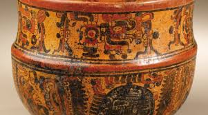
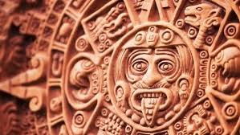

ARTE
El arte de la cultura maya (aprox. 500 a. C. - 1500 d. C.) es una de las expresiones más sofisticadas de Mesoamérica, destacando por su profunda religiosidad y complejidad política. Se caracteriza por sus detalladas esculturas en piedra, estelas, pintura mural, cerámica fina y arquitectura monumental, usando materiales como jade, estuco, madera y concha para representar la vida cortesana, deidades y el cosmos.
Características Principales del Arte Maya:
Arquitectura: Centros ceremoniales con pirámides escalonadas, palacios, campos de juego de pelota y plazas, a menudo cubiertos con estuco y pintados, con motivos de serpientes emplumadas y relieves.
Escultura: Incluye estelas, altares y dinteles tallados, destacando por su realismo anatómico y expresividad, con sitios clave como Palenque y Copán.
Pintura Mural y Cerámica: Destacan los murales de Bonampak por sus narrativas, y cerámica policromada con escenas complejas, utilizando colores como el "azul maya".
Temática y Materiales: Representaban rituales, gobernantes, batallas y mitología. Trabajaron con gran maestría el jade (considerado precioso), conchas, hueso y madera.
Influencias: Recibieron influencias significativas de las culturas olmeca, teotihuacana y tolteca.

El arte de la cultura maya es una de las manifestaciones más ricas y detalladas de Mesoamérica, ya que refleja su religión, su organización social, su visión del mundo y su vida cotidiana. Se desarrolló durante siglos y alcanzó un alto nivel de perfección, especialmente en ciudades como Palenque, Tikal y Bonampak.
Uno de los aspectos más destacados del arte maya es su carácter simbólico y religioso. La mayoría de las obras representaban dioses, gobernantes, animales sagrados y escenas ceremoniales. No era un arte solo decorativo, sino que tenía un profundo significado espiritual y político.
En la escultura, los mayas trabajaron principalmente la piedra. Elaboraron estelas (grandes bloques verticales) donde tallaban figuras de gobernantes junto con inscripciones jeroglíficas que narraban hechos importantes, como guerras, alianzas o rituales. También realizaron relieves en templos y esculturas de dioses con gran nivel de detalle.
La pintura mural fue otra de sus grandes expresiones. Un ejemplo impresionante se encuentra en Bonampak, donde los muros muestran escenas de batallas, ceremonias y vida cortesana con colores vivos y gran realismo. Estas pinturas permiten conocer cómo vestían, cómo se organizaban y cómo vivían. En la cerámica, los mayas crearon vasijas, platos y figuras decoradas con pinturas y grabados. Muchas de estas piezas representaban escenas mitológicas, animales o momentos de la vida diaria. La cerámica también era utilizada en rituales y como ofrenda.
El arte en jade fue muy valorado el jade era considerado una piedra preciosa y sagrada. Con él elaboraban máscaras, joyas, collares y adornos que eran utilizados por la nobleza y los gobernantes, estas piezas simbolizaban poder, vida y conexión con lo divino.
Los mayas también destacaron en el arte textil. Tejían telas de algodón decoradas con bordados y colores naturales. Los diseños representaban elementos de la naturaleza, símbolos religiosos y la identidad de cada comunidad. Aunque muchos textiles no se conservaron por el paso del tiempo, su importancia sigue viva en comunidades actuales.
Otro elemento importante fue el arte corporal, como los tatuajes, la pintura corporal y la deformación craneal intencional, que eran prácticas relacionadas con la estética, la identidad social y las creencias religiosas.

La arquitectura decorativa también forma parte del arte maya. Los edificios no solo eran estructuras funcionales, sino que estaban adornados con esculturas, relieves y figuras simbólicas. En Uxmal se pueden observar fachadas decoradas con máscaras del dios de la lluvia y patrones geométricos.
El arte maya también estaba estrechamente ligado a la escritura jeroglífica, ya que muchas obras incluían textos que narraban historias, genealogías y acontecimientos importantes, esto convierte su arte en una fuente histórica muy valiosa.
En cuanto a los colores, utilizaban pigmentos naturales como el rojo, azul, negro y amarillo. Uno de los más famosos es el “azul maya”, un pigmento muy resistente que ha perdurado hasta nuestros días.
En la actualidad, el arte maya sigue vivo en regiones como Yucatán y Quintana Roo, donde muchas comunidades continúan elaborando bordados, artesanías y piezas inspiradas en sus tradiciones ancestrales.
En conjunto, el arte maya no solo demuestra la habilidad técnica de esta civilización, sino también su profunda conexión con la religión, la naturaleza y el poder. Es un legado que permite comprender su forma de pensar, su historia y su identidad, y que sigue siendo admirado en todo el mundo.